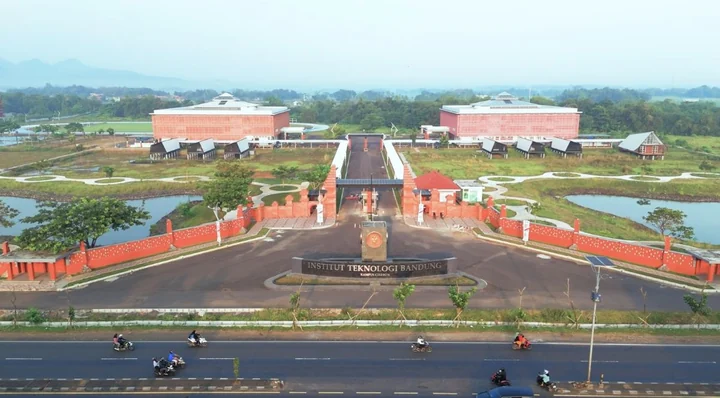

Ganesha
Titik prakiraan: Dago, Bandung
Perlu dipantauKondisi cuaca mendukung, tetap pantau potensi hujan sekitar pukul 19:00 WIB.
22.8°C
Suhu rata-rata
38%
Peluang hujan tertinggi
19:00
Puncak · WIB
Prakiraan Dago, Jatinangor, dan Arjawinangun untuk kuliah, perjalanan, dan aktivitas di luar ruang.
Aula Barat · Kampus Ganesha · Foto dokumentasi, bukan kondisi cuaca langsung
Lihat prakiraan di lokasi pilihanmu, lalu susun rencana hari ini.
Titik prakiraan: Dago, Bandung
Perlu dipantauKondisi cuaca mendukung, tetap pantau potensi hujan sekitar pukul 19:00 WIB.

Titik prakiraan: Jatinangor, Sumedang
Perlu dipantauKondisi cuaca mendukung, tetap pantau potensi hujan sekitar pukul 19:00 WIB.

Titik prakiraan: Arjawinangun, Cirebon
Potensi gangguan rendahKondisi cuaca mendukung aktivitas luar ruang. Periode nyaman terpantau pada: 20:00–23:00.
Titik prakiraan tiga lokasi. Pilih jam, lokasi, dan parameter yang ingin dilihat.
Unduh prakiraan, periksa sumbernya, dan gunakan data sesuai waktu berlakunya.